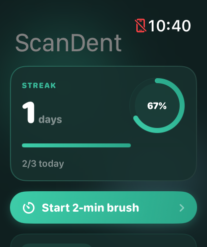
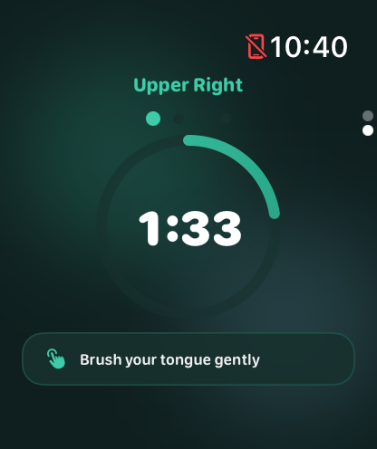
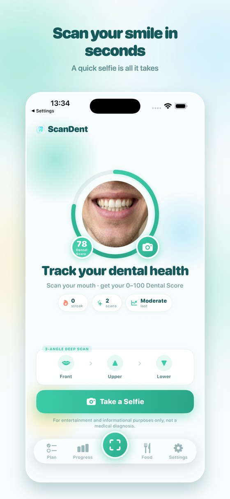
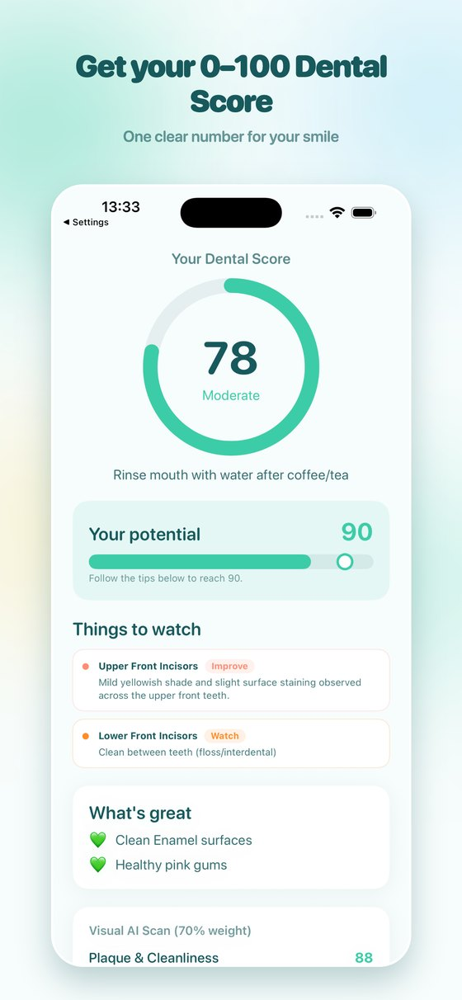
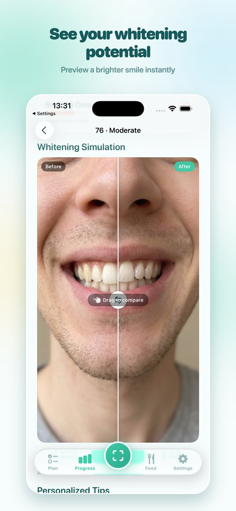
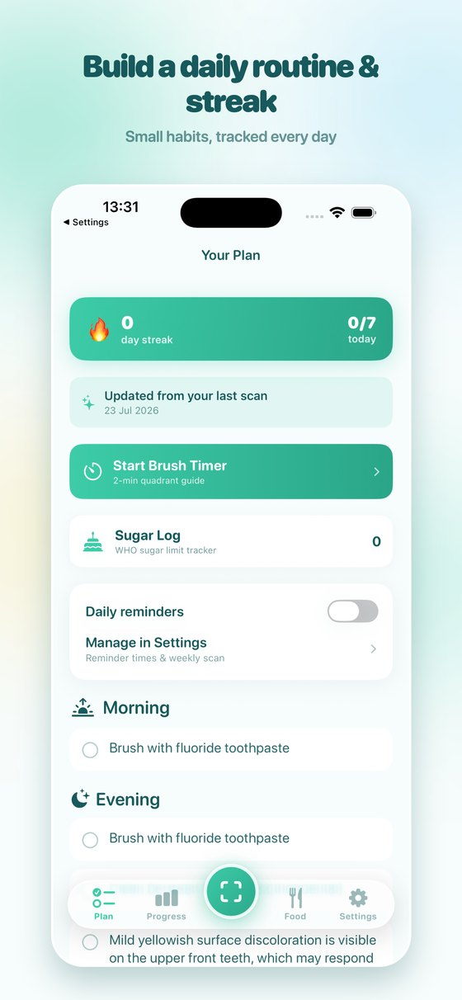
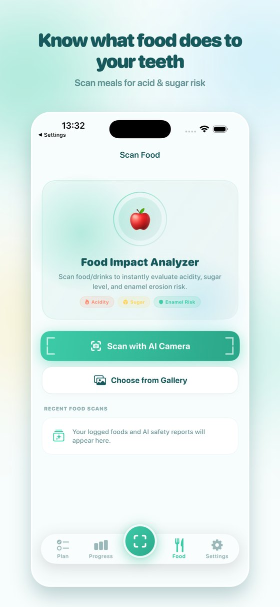
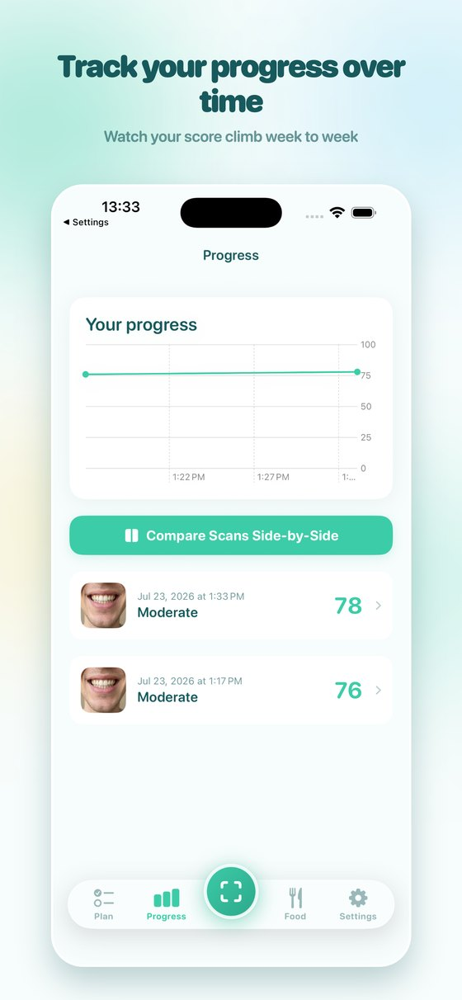

0–100 Dental Score
Clear overall score with sub-metrics for plaque visibility, enamel staining, and gum appearance — powered by AI vision.
ScanDent turns a quick 3-angle selfie into a 0–100 Dental Score, visual insights, a daily care plan, streak tracking, and a free Apple Watch brushing companion — built for curiosity and better habits, not clinic visits.
For entertainment and informational purposes only — not a medical diagnosis.
A focused iOS experience — scan, score, build habits, and track progress over time.
Clear overall score with sub-metrics for plaque visibility, enamel staining, and gum appearance — powered by AI vision.
Front, upper, and lower jaw captures with in-app camera guidance — about 30 seconds for a full analysis.
Explore a cosmetic before/after preview with ScanDent Pro — a visual simulation, not a treatment promise.
Personal tips, morning/evening checklist, brushing reminders, and streak tracking to keep you consistent.
Log meals and scan foods to understand sugar and acid exposure that may affect your dental health over time.
Compare scans side-by-side and watch your score trend as your routine improves.
ScanDent includes a companion Apple Watch app at no extra cost — syncs with your iPhone plan, streak, and daily checklist. No paywall on Watch.


Three quick angles. One personalized result. About 30 seconds.
Use the in-app camera guide to take front, upper, and lower jaw photos — or pick from your library inside the deep scan flow.
ScanDent sends compressed images to our secure AI proxy and returns your personalized Dental Score and insights.
Follow your daily plan, track streaks on iPhone and Watch, and compare progress on your next scan.
Your Dental Score, whitening preview, daily plan, food impact, and progress — all in one app.






Unlock full scan details, whitening simulation, unlimited deep scans, food tracker, and more.
Prices in USD. Regional pricing may vary. Subscriptions are billed through Apple.
ScanDent is available now on the App Store. Free to download — run your first dental scan today.
Download on the App Store Contact us